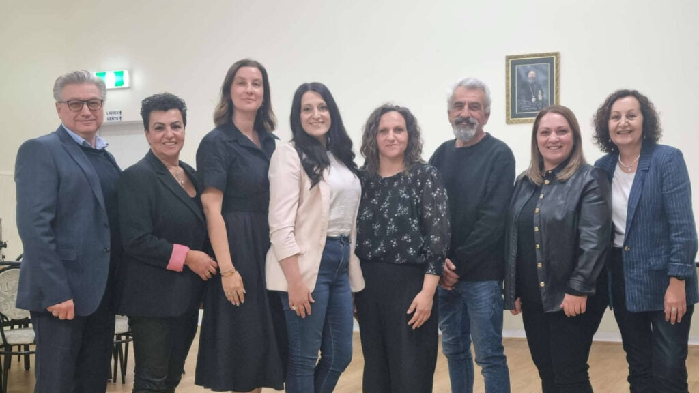

About Us
The Cultural Centre of Florinians “O Aristotelis” (the Cultural Centre) has proudly served Melbourne since 1956, preserving and promoting the rich Hellenic heritage of Florina, Greece.
Established by early migrants from northern Greece, the Cultural Centre was founded on a deep desire to maintain cultural identity while building connection and belonging in a new homeland.
Today, the Cultural Centre continues that vision by strengthening cultural pride within our community while fostering intercultural understanding within Melbourne’s diverse multicultural landscape.
Our programs celebrate the traditions of Florina through traditional dance, folk music, singing, culinary workshops, textile crafts and children’s cultural activities.
With more than 100 members across all generations, the Cultural Centre provides opportunities for young people, families and seniors to learn, participate and connect.
We offer weekly senior gatherings to support wellbeing and social connection through shared meals, conversation and cultural storytelling. We offer youth dance lessons and events to encourage the next generation to develop pride in their heritage and share this confidence in their cultural identity.
For almost seven decades, the Cultural Centre of Florinians “Aristotelis” has remained dedicated to preserving traditions, strengthening community bonds and ensuring that the culture of Florina continues to thrive in Melbourne for generations to come.
Our Leadership
As we celebrate 70 years, we acknowledge the dedicated leadership guiding our Cultural Centre into its next chapter

Current Committee
- President: Chrissy Georgiou
- Vice President: Anne-Marie Tsiounis
- Secretary: Nicoleta Romas
- Assistant Secretary: Vickie Lamprou-Hatt
- Treasurer: Chris Klinkatsis
- Assistant Treasurer: John Aidonidis
- Dance Group Liaison Officer: Nektaria Gassin
- Public Relations Officer: George Katsakis
- General Committee Member: Anna Aidonidis